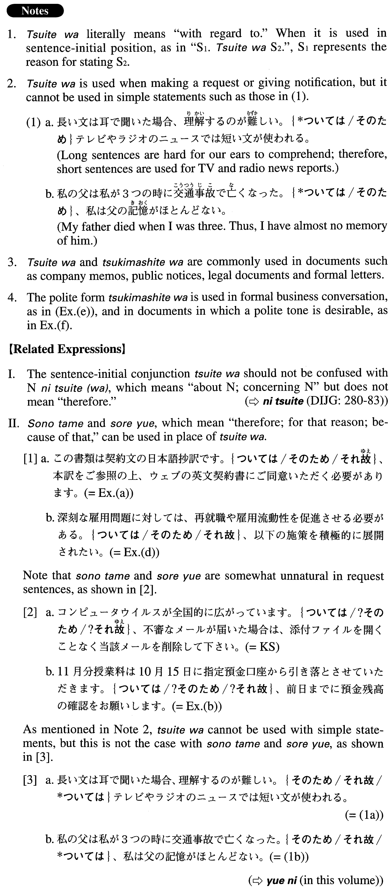

ついては (A. 674)
- (ks).
- コンピュータウイルスが全国的に広がっています。ついては、不審なメールが届いた場合は、添付ファイルを開くことなく当該メールを削除して下さい。
- Computer viruses are spreading across the country. Because of this, if you receive a suspicious e-mail (literally: in the event a suspicious e-mail arrives), delete the email without opening the attached file.
- (a).
- この書類は契約文の日本語抄訳です。ついては、本訳をご参照の上、ウェブの英文契約書にご同意いただく必要があります。
- This document is the abridged Japanese translation of the agreement. Therefore, it is necessary for you to refer to this translation and accept the English agreement posted online.
- (b).
- 11月分授業料は10月15日に指定預金口座から引き落とさせていただきます。ついては、前日までに預金残高の確認をお願いします。
- We are going to withdraw the November tuition and fees from your designated bank account on October 15. Therefore, please be sure to check the account balance by the previous day.
- (c).
- 夏の省エネ対策について本社から通知がありました。ついては、別紙を参照の上、夏季のエネルギー節約にご協力をお願いいたします。
- Headquarters has sent a notification with regard to summer energy conservation measures. We therefore request your cooperation with the summer energy saving in accordance with the measures listed in the attachment (literally: after referring to the attachment).
- (d).
- 深刻な雇用問題に対しては、再就職や雇用流動性を促進させる必要がある。ついては、以下の施策を積極的に展開されたい。
- To counter the serious unemployment (literally: employment) problem, it is necessary to promote reemployment and employment mobility. With regard to this, we'd like the following measures to be actively implemented.
- (e).
- 新しくインターネット販売の事業を始める計画です。つきましては、その資金を融資していただきたいのです。
- We plan to launch a new Internet sales business. Therefore, we would like to request financing for it.
- (f).
- 今月は「リサイクル強化月間」になっています。つきましては、皆様方のご理解とご協力をお願いいたします。
- This is a "recycling reinforcement month." We therefore request your understanding and cooperation.
